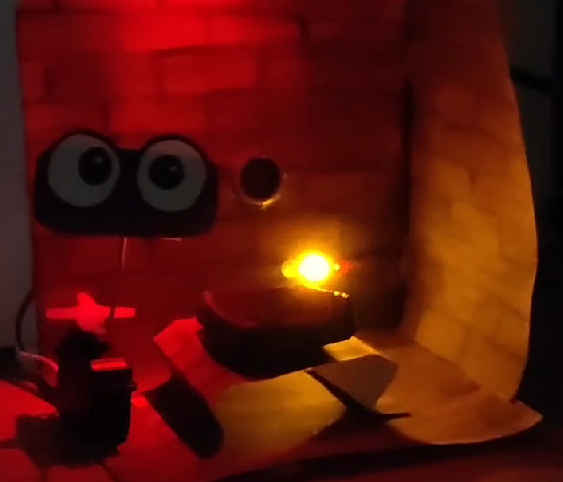
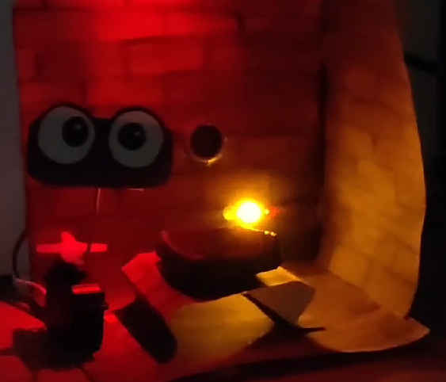

AI, ML, and Data Visualization
ASL Alphabet Recognition Project
SVC, XGBoost, ANNs: Developed a project to translate American Sign Language (ASL) for individuals with hearing difficulties using Leap Motion for gesture recognition.
Popularity of New Articles
R Shiny: A webpage that analyzes which platform is the preferred source for the general public to get their news.
Status and Locations of Shelter Dogs
Observable, Vegalite, and D3: A project visualizing the location and status of shelter dogs aimed to persuade potential dog buyers to adopt dogs instead.
Global Happiness Trends
Python and Sklearn: A report on the factors that hold weight in the changes of global happiness scores with consideration of the pandemic with visualization and prediction with machine learning.
Contests
UW Mind Hub
Hackathon Contest Entry - Cybersource Visa Sponsership Award: a prototype app aimed to increase student wellness and connectivity.
Eco
Hackathon Contest Entry - Second Place: A Green Logistics project on how construction businesses can contribute to a carbon neutral environment by creating an platform for them to mangage their resource allocations.
Arduino Projects
Vigilance
Vigilance explores the concept of surveillance. The goal of the interactor is to grab the treasure from the stand without being caught by the guard.
 

Hidden Box in the Forest
As you go into the forest, you see a magical house nearby. It greats you with welcoming, cheerful music as you approach. There is a strange red glow in one of the houses. You think that there is hidden treasure inside and try to pull open the house of the door to see whats inside, but you’ve poked too far, the music switches to a terrible slow sound and the lights close. The work expresses what would happen is one were to get too close or involved in something that that know nothing about.